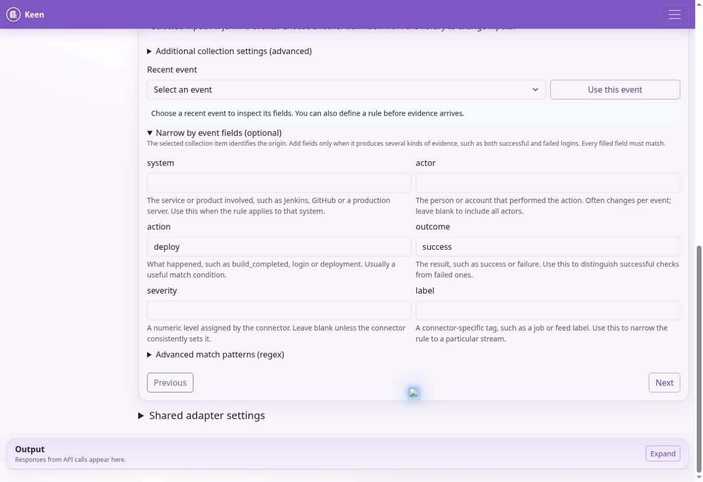

Administering KEEN
This guide covers deployment, access control, collection, application-managed configuration, recovery and troubleshooting. Application administrators maintain frameworks and evidence definitions in KEEN. Systems administrators operate the runtime, credentials, networking and backups. In a managed installation, the hosting operator performs the server tasks.
Runtime and responsibilities
KEEN runs as six Docker Compose services. keen-ui serves static HTML and JavaScript through nginx and proxies /api/ requests to keen-api. keen-api runs FastAPI. keen-worker executes Celery tasks. keen-beat schedules background work. PostgreSQL stores application records and configuration; Valkey provides sessions, caching, rate limits, background-job messaging and notifications.
Artefacts use the configured local storage backend or S3-compatible storage. The standard Compose configuration includes pgdata, beatdata and artifacts volumes. The API and worker must see the same artefacts. PostgreSQL contains the references, mappings and configuration needed to interpret those objects; a complete backup includes both PostgreSQL and the referenced objects.
The external HTTPS proxy forwards to the UI listener, bound to 127.0.0.1:8081 in the supplied Compose file. Do not expose PostgreSQL, Valkey or the API directly to the internet. Scrub client-supplied identity headers at the proxy. Native OIDC uses KEEN’s server-validated session cookie.
Deploy a self-managed installation
Use a supported Docker Engine and Compose plugin, DNS for the application, a trusted TLS certificate and sufficient storage for the database, artefacts and build cache. The UI build context must contain keen and the mosp-design-system repository as siblings. The supplied KEEN archive alone does not contain that design-system dependency.
- Place the code and matching design-system dependency in the expected layout. Record the release or commit used for each.
- Create a protected .env using the release’s settings. Configure the database, Valkey, public URL, authentication and artefact backend. Use unique secrets.
- Configure the HTTPS proxy and firewall. Keep internal services on the private Compose network.
- Build the images, start the backing services, apply the migrations and start the application services.
- Verify HTTPS, sign-in, framework catalogues, an artefact round trip, one ingestion and a restore into a separate test environment.
Run from the keen directory. These commands apply to the supplied self-managed Compose layout.
docker compose build
docker compose up -d postgres valkey
docker compose run --rm keen-api alembic upgrade head
docker compose up -d
docker compose ps
docker compose logs --tail=100 keen-api keen-worker keen-beatThe API startup script also applies migrations. An explicit migration step makes failures visible before the rest of an upgrade proceeds. Never run competing migration processes against the same database.
For local bootstrap, set KEEN_BOOTSTRAP_ADMIN_USERNAME and KEEN_BOOTSTRAP_ADMIN_PASSWORD before initial startup. Verify the administrator can sign in, protect the bootstrap values and follow your credential-management process. In hosted mode, owner provisioning uses the separate hosted bootstrap and must not create a generic shared administrator.
Configure the runtime
The definitive environment schema is services/api/app/core/config.py. Most fields use the KEEN_ prefix, but some connector secrets have explicit aliases. Apply the same relevant settings to API, worker and beat. Restart or recreate affected containers after environment changes; changing a host’s .env does not change an already running container’s environment.
Core and authentication settings
KEEN_DATABASE_URL connects to PostgreSQL. KEEN_REDIS_URL connects to Valkey. KEEN_PUBLIC_BASE_URL is the externally reachable HTTPS origin used in application links. KEEN_TIMEZONE and KEEN_UI_DATE_FORMAT define installation defaults; users can have their own presentation preferences.
KEEN_LOCAL_AUTH_ENABLED controls local sign-in. KEEN_COOKIE_SECURE should remain true for production. KEEN_COOKIE_SAMESITE and KEEN_CSRF_COOKIE_SAMESITE must suit the chosen authentication flow; test the complete cross-site OIDC sign-in flow. Keep KEEN_COOKIE_DOMAIN empty for host-only cookies unless a separately reviewed deployment requires otherwise.
Native OIDC uses KEEN_OIDC_ENABLED, issuer, authorisation and token endpoints, JWKS URI, client ID, client secret, scopes and an exact redirect URI. Configure the corresponding logout URLs where supported. Keep TLS verification and the asymmetric algorithm allowlist. Provision authorised local identities according to the selected mode; do not enable unrestricted automatic provisioning as a shortcut.
Google and GitHub integrations have their own enablement, client and claim settings. Trusted remote-user mode is separate and requires a trusted proxy that strips incoming identity headers and supplies verified identity. Do not trust a header from an internet client. Hosted mode disables local and trusted-header authentication and requires its configured owner subject and OIDC issuer.
Session settings include KEEN_SESSION_TTL_SECONDS and the session-cookie name. Login rate limiting uses the configured window and per-IP/per-username limits. Valkey availability is therefore security-critical as well as operationally important.
Storage, mail and privacy settings
KEEN_ARTIFACT_STORAGE_BACKEND accepts the configured backend selection; KEEN_ARTIFACT_LOCAL_DIR sets local storage. For S3, configure bucket, region, endpoint and credentials as required. KEEN_S3_USE_INSTANCE_ROLE enables the AWS credential chain in the hosted integration. Do not combine its tenant role with broad static AWS credentials.
SMTP settings include KEEN_SMTP_HOST, port, username, password, TLS or SSL mode, sender address/name and timeout. Match TLS mode to the mail service. Configure the public base URL before testing audit invitations.
KEEN_EVENT_DATA_MASKING controls optional data masking. Sample PDF header/footer and evidence filename-prefix settings control export presentation. Review exported samples to confirm the intended wording and data treatment. Collect only the information needed for assurance and use automatic secret redaction as an additional safeguard.
KEEN_SCHEDULED_AUDIT_CREATE_DAYS_AHEAD controls how far ahead scheduled audits are materialised. Outbound question, reply and incident integrations have separate webhook destinations, optional signing secrets and timeouts. Store these as secrets where appropriate and test delivery without placing credentials in audit notes.
Manage frameworks and the risk library
Use Admin → Frameworks for normal framework maintenance. Select a framework or choose New framework, enter its slug and descriptive fields, and Save framework. Add Clause, Control or Custom nodes with references, titles, hierarchy, scope and related clauses. Save a small change and inspect the result before a broad edit.
Slugs and node identities are stable identifiers. The editor does not rename them in place. Deletion may be blocked by children, clause relationships or evidence mappings. Review the impact on linked risks, audits and other records before removing content. Do not use direct SQL deletion to evade a dependency check.
The migration chain seeds the bundled framework catalogues, including KEEN Assurance Framework (KEEN-AF:1.0), and the reusable risk library. Seed data is shipped with the release; migrations load the version included in that release. Framework and risk-library changes made in the application belong in PostgreSQL backups.
Risk register settings apply to the shared set of risk scenarios. The editor, register and heatmap use the same 1–5 likelihood and impact fields for inherent and residual scoring. Library templates are reusable starting points. Their suggested ratings and KEEN-AF control links need local review. Review existing risk assessments individually when a template changes.
Operate evidence definitions


Admin → Evidence definitions is the authoritative working interface for collection inputs and mappings. The Source catalogue distinguishes adapter enablement, collection items, definitions and observed events. Connection credentials and adapter enable flags stay in the server environment.
Create evidence definition has four steps: describe the evidence; collect and recognise; select framework controls or clauses; preview and save. Select an existing collection item when it is shared. Creating another definition for the same item lets different event outcomes map to different targets without duplicating collection.
Choose All events from this source only when a source-wide match is intended. Otherwise keep the rule tied to its query, job, feed, project, stream or page. Stable collection identifiers prevent evidence from another input being treated as interchangeable merely because it uses the same adapter.
Use Recent event and Use this event to inspect normalised fields. Every supplied matching condition is conjunctive. Prefer exact field matches; use advanced regex only where necessary. Select every intended target explicitly and review any description-based suggestions. Target references must exist in the selected framework.
Preview matches before saving, checking negative examples as well as positive ones. Select Predefine only when evidence is not available, then schedule a review after first collection. Confidence is between 0 and 1. Disabling a definition stops its application in the rule set; it does not prove that every historical mapping has been removed.
Configuration storage and concurrency
PostgreSQL holds managed configuration documents and their revisions. The evidence-definition save path publishes its collection item and rule together and checks configuration versions. A 409 conflict means another writer changed the data: reload, inspect the newer version and reconcile deliberately.
The migration chain initialises managed configuration from the supplied inputs or existing database overrides. Once those records exist, database configuration takes precedence. Use the web editors to update a migrated installation’s rules and collection settings. Preserve bootstrap files for recovery and provenance, but back up the database to preserve live settings.
Additional collection settings is an advanced per-item JSON panel. Shared adapter settings applies common adapter options. Neither is a credential store. Keep connector-specific fields consistent with the adapter schema and retain a configuration revision before a substantial change.
Connect operational sources
For each connector, enable it, provide a least-privilege upstream identity, create collection inputs in the evidence-definition editor, run a small collection, inspect the actual normalised fields and preview the mapping. Test outbound HTTPS and upstream permissions from the runtime network. Do not disable certificate verification to make a connector work.
Loki and CloudWatch Logs
Loki uses KEEN_LOKI_ENABLED, its base URL and configured basic or header authentication. Define named LogQL queries in the application and set normalised source/system/action/outcome/severity fields where appropriate. Initial lookback, maximum query range, overlong-range strategy and catch-up chunks constrain backlog processing.
CloudWatch Logs uses KEEN_CLOUDWATCH_LOGS_ENABLED, the configured region and an AWS identity with access to the necessary log groups. Define a query’s name, region, log group, filter pattern and event fields in the editor. A hosted tenant’s default IAM role does not grant access to arbitrary customer AWS logs; arrange a narrowly scoped integration with explicit access to the intended log groups.
GitHub, Forgejo and Jenkins
GitHub supports organisation, repository and feed inputs. Configure KEEN_GITHUB_ENABLED and its base URL as required; secret aliases include GITHUB_TOKEN and GITHUB_USERNAME. Review upstream API quotas and restrict repository access to the intended scope.
Forgejo feed collection uses its configured base URL and authentication mode. Secret aliases include FORGEJO_TOKEN, FORGEJO_USERNAME and FORGEJO_COOKIE. Use only the credential mode needed by the deployment, and preserve the source URL’s HTTPS protections.
Jenkins uses KEEN_JENKINS_ENABLED, KEEN_JENKINS_BASE_URL, JENKINS_USERNAME and JENKINS_API_TOKEN. Define jobs by stable name. The job’s kind becomes the event action and label becomes its system. A condition looking for deploy will not match an event whose action is deployment; inspect the actual evidence and use the exact values on the collected event.
Taiga, BookStack, RSS and Google Workspace
Taiga uses enabled/base URL settings and its configured token or supported credentials. Add project IDs and labels in the application. Confirm the upstream account can read the intended projects.
BookStack uses KEEN_BOOKSTACK_ENABLED, KEEN_BOOKSTACK_BASE_URL, BOOKSTACK_TOKEN_ID and BOOKSTACK_TOKEN_SECRET. Browse the server-backed book/page catalogue in the editor. Choose pages and configure capture options through the supported settings. Imported selectors can continue to identify pages by book, slug, title or pattern. Check captured content and section handling before relying on a policy extract as evidence.
RSS/Atom uses KEEN_RSS_ENABLED and named feed inputs with URL, label, system and optional item/overlap limits. Feed access remains HTTPS-verified. Use a small known feed first and confirm how publication timestamps and duplicate items are handled.
Google Workspace uses KEEN_GOOGLE_WORKSPACE_ENABLED, the configured service-account material and impersonation identity. Grant the required upstream scopes and delegation deliberately. Configure named streams with application, user key and system. Keep private-key material out of collection definitions and browser-visible settings.
Incoming webhooks and metrics
Webhooks use provider configuration, a configured secret header and a server-side secret reference. The API authenticates these endpoints independently of browser sessions. Preserve timestamp/replay checks and rate limiting, and restrict ingress at the proxy where practical. Do not expose an unauthenticated endpoint merely because the application’s normal pages require login.
Effectiveness-measure metrics have their own ingestion routes and payload requirements. Check the running API schema and configured provider before integrating. Validate a test observation against the intended measure and period. Do not confuse a generic evidence event with a metric observation.
KEEN Agent and OTLP logs: register server collectors, configure reliable log delivery and map patching or auditd activity to framework controls.
Scheduling, manual runs and cursors
Celery beat schedules source tasks and other maintenance work. Run only one scheduler for the intended schedule unless the deployment explicitly supports coordinated schedulers. Check both beat’s enqueue logs and the worker’s execution logs when a scheduled action is missing.
In this release, the beat schedule is defined in app/worker/celery_app.py. Cron minute expressions are minute-of-hour selectors. In particular, expressions such as */75, */95 or */110 must not be described as reliable 75-, 95- or 110-minute polling. Review and correct those shipped entries before depending on those cadences; use an interval schedule for an elapsed interval longer than an hour.
Admin → Imports & adapters starts an enabled source outside its normal schedule. Read the result, then inspect the Events list. A successful task can collect zero new events. Compare the source, upstream data, time range and cursor before changing configuration.
Cursors record collection progress and their meaning varies by adapter. Before a cursor repair, stop concurrent ingestion, record the current cursor, take a database backup and understand the adapter’s lookback/pagination semantics. Rewinding can reprocess data; advancing can permanently skip upstream history. Resume with a bounded run and verify counts and timestamps. There is no universal safe cursor-reset command.
Historical mapping and revision recovery
Saving with Apply this rule to previously collected evidence in the background queues historical evaluation. Jobs are durable and resumable; inspect progress and failure information before launching duplicates. Worker and beat availability matter to job recovery. A saved rule and a completed backfill are separate outcomes.
Apply saved rule to past evidence starts a job for an existing definition. Admin → Evidence definitions → Review historical remapping offers broader filtering. By default it finds events with no mappings; Include already-mapped events allows additive mapping of those already linked. Choose a bounded source/time range first.
Tightening a rule does not by itself remove every previous automatic mapping. Use the stale-mapping review, inspect one batch of at most 500, and prune only the reviewed result. The implementation preserves manual and imported mappings and rechecks current rules. Repeat carefully because the result set can change after removal.
Restore a prior rule set recovers configuration. Mappings, evidence and audits retain their own history. After restoring, preview examples, apply the desired historical evaluation and separately review stale automatic mappings. If aggregate counts remain wrong, investigate the control-evidence statistics and cache before collecting replacement evidence.
Upgrade safely
Record the current image versions, database revision and configuration before an upgrade. Take a database backup and protect the corresponding artefacts, encryption material and environment secrets. Restore that backup in a test environment and rehearse the upgrade before changing a customer instance.
Quiesce ingestion and writes for the maintenance window where a consistent rollback point is required. Build or pull the reviewed release, run alembic upgrade head once, start the API/UI and worker, and start beat after checking migrations. Verify sign-in, a framework node, an existing risk, a document version, a mapped event and an artefact download.
A container rollback is safe only if the earlier application understands the migrated schema. Otherwise restore the pre-upgrade database and compatible object state into an isolated recovery environment. Do not run an Alembic downgrade against production without a reviewed data-loss analysis.
For routine service inspection use docker compose ps and scoped logs. docker compose stop preserves volumes; docker compose down -v removes them and is destructive; use stop/start for a routine restart. Avoid printing the fully resolved Compose configuration into shared logs because it can contain secrets.
Backups and restore
Back up PostgreSQL, all referenced artefact storage, configuration/secrets and the release identifiers needed to rebuild the runtime. Use an application-consistent database backup procedure. Use encrypted destinations and access controls independent of normal application access.
For the standard self-managed Compose service, a custom-format PostgreSQL dump can be created as follows. Store the output on a protected backup destination and monitor the command’s exit status.
umask 077
docker compose exec -T postgres sh -c 'pg_dump -U "$POSTGRES_USER" -d "$POSTGRES_DB" -Fc' > keen-postgres.dumpTest restores into a separate, empty recovery database. Restore the matching artefacts and keys, use the compatible application release, disable outbound notifications and ingestion until validated, and check representative records and artefact checksums. Keep the original production environment intact until the recovery copy is verified and an intentional cutover is agreed.
For S3, inventory object versions and retention dates. For local artefacts, include the shared artefact volume in the backup procedure. Preserve metadata needed to resolve each stored artefact reference. Encryption is only recoverable if the corresponding keys and permissions remain available.
A retention period and a deletion policy are different. Object Lock prevents premature removal; expiry does not itself erase every retained version. Define and test lifecycle/deletion procedures, including noncurrent versions, legal holds and backup copies. Record the last successful backup and last successful restore test separately.
Explore your demo safely
Your demo includes fictional evidence and linked ISMS records for exploring KEEN. Use these examples to practise framework edits, evidence mapping, risk assessment and audit sampling. Keep experiments fictional and review the expiry displayed in the application.
New API integrations are disabled in the demo. The preset public RSS feed provides supplier-news evidence. Connection setup, infrastructure administration and backup procedures in this guide apply when operating your own KEEN installation.
Diagnose problems in order
If the API fails at startup, inspect its logs for invalid settings, database connectivity and migration errors. Confirm that the configured database exists and credentials match. If worker or beat cannot connect, check KEEN_REDIS_URL and the private service network.
If the UI loads but requests fail, inspect the browser-visible error and nginx/API logs. Browser API URLs begin /api/v1/; the API receives /v1/. Check proxy rewrites, TLS forwarding and cookie settings. A 401 concerns authentication; a 403 can concern permission or CSRF. Do not resolve either by disabling the relevant control.
If OIDC fails, compare the exact issuer, client, callback URL, JWKS and host origin. Check clock accuracy and whether a prior login state was already consumed. In hosted mode, confirm the correct owner subject without exposing ID tokens or client secrets in logs.
If ingestion is disabled, check the adapter flag. If it runs without evidence, check its collection items, credentials, upstream permissions, filters and cursor. If evidence arrives but does not map, preview the definition against that exact event and check collector identity, field values and existing framework targets.
For S3 AccessDenied, compare the runtime principal, bucket, prefix, encryption key and any required conditional-write headers. In hosted mode, a denial against another customer’s resource is expected. Never solve an access error by adding wildcard permissions.
For stale UI behaviour, verify the deployed UI image and asset cache before changing data. For stale counts, check the aggregation/cache refresh path. For failed mail or outgoing webhooks, inspect the task result and destination configuration; avoid repeated notifications while diagnosing.
Routine assurance checks
Review backup success and capacity daily according to the service process. Investigate failed collections, missing metrics and expired credentials. Periodically test restoration, customer isolation, owner account recovery and alert delivery. Review unused accounts, group permissions and upstream integration privileges.
Use the entity changelog for content changes and the request log for API activity. Protect those logs and minimise sensitive request data. Retain operational evidence of maintenance, incident response and restore testing so your own hosting service can be assessed with the same discipline as its customers’ systems.
Documentation edition: 2 October 2026
Evidence storage, integrity and retention
KEEN keeps searchable events, mappings and artifact references in PostgreSQL. The captured artifact bytes live in the configured local directory or S3-compatible bucket. An artifact record stores its URI, SHA-256 digest, content type, size and capture information. Redaction runs before persistence; the recorded artifact checksum describes the stored, redacted bytes.

Diagram source (Mermaid)
flowchart TB
K["KEEN writes a redacted artifact"] --> W{"Configured backend"}
W -->|Local| L["Create a new file; refuse replacement"]
W -->|S3| S["PutObject to the configured bucket"]
P["Bucket and IAM policy"] --> S
H["Hosted mode: conditional create and required versioning"] --> S
S --> V["Return object version ID when available"]
L --> D["PostgreSQL: artifact URI, SHA-256 and event reference"]
V --> D
D --> R["Read the recorded object version for review or export"]
O["Optional Object Lock: operator-configured retention or legal hold"] -.-> S
| Storage control | What KEEN does | What the operator configures |
|---|---|---|
| Local artifacts | Creates a new file and refuses replacement at an existing key. | Filesystem access, disk encryption, backups and protection from privileged modification/deletion. |
| General S3 storage | Writes an object; records and reads its version ID when returned by the provider. | Versioning, encryption, least-privilege IAM, deletion policy and provider support. |
| Hosted S3 write protection | Sends If-None-Match: * and requires a returned version ID. The supplied host-role bucket policy denies deletion and requires conditional creation. | The actual deployed role, bucket policy and versioning; recovery/operator permissions are separate. |
| S3 Object Lock | Uses the bucket’s storage behavior. The artifact writer does not set a per-object legal hold or retention period. | Enable Object Lock and a suitable default retention policy or legal hold through the storage platform. Verify enforcement on new objects. |
Choose the protection your retention policy requires. Versioning preserves object versions; a recorded version ID selects the captured version. SHA-256 detects a change when bytes are verified against the recorded digest. AWS Object Lock protects object versions according to governance/compliance retention and legal holds. Governance bypass depends on granted permissions; compliance retention is stricter. The supplied short-lived hosted bucket configuration leaves Object Lock disabled, so an Object Lock retention guarantee must be established separately for a long-lived installation.
Keep database backups and the referenced object versions together. Protect encryption keys for as long as the retained evidence must remain readable. Review lifecycle rules for current objects, noncurrent versions, abandoned objects and backups. Where Object Lock applies, cleanup must respect its retention and hold rules.
Verify the deployed configuration using the storage provider’s controls and an approved test object: capture it, confirm its version and KEEN reference, test overwrite/deletion with the application role, and check retention metadata if configured. Keep recovery credentials separate from the runtime.
References: AWS Object Lock behavior and Object Lock configuration.
Operate KEEN Agent and OTLP collectors

Diagram source (Mermaid)
flowchart TB
L["Selected log files or journal"] --> P["Parse and redact"]
P --> Q["Atomic local transaction: UUID, record and checkpoint"]
Q --> T["Send OTLP JSON over verified HTTPS"]
T --> A{"Valid scoped credential and batch?"}
A -->|Yes| D{"UUID already stored?"}
D -->|Same content| OK["Return success"]
D -->|New| S["Store artifact, event and mappings; commit"]
S --> OK
OK --> R["Remove acknowledged records from queue"]
A -->|Permanent rejection| H["Pause delivery; retain records"]
D -->|Conflicting content| H
T -->|Network error or retryable response| B["Back off and retry the same UUIDs"]
B --> T
KEEN Agent is a standalone Linux Go service that collects selected host logs and sends OTLP/HTTP JSON to KEEN. It enriches records with patching, HTTP, PHP and Linux Audit context. KEEN stores the events and their redacted artifacts, then applies the existing framework mapping rules.
Install the KEEN receiver
Apply the accompanying incremental patch to the KEEN platform tree, rebuild the API and UI, and run the normal Alembic database migration (alembic upgrade head inside the API service). Revision 0081_keen_agent adds agent identities. Keep the database backup and normal rollout procedure used by your installation. Existing ingesters remain available.
Open Admin → Integrations → Manage agents, register one identity per server, and save the one-time credential. Choose its expiry (1–365 days, default 90). No Fernet integration key is needed: the server stores only a SHA-256 hash of the randomly generated 256-bit credential. Outbound API integration credentials continue to use their existing encryption mechanism.
The standard reverse proxy endpoint is https://keen.example.org/api/v1/otlp/logs. Direct API deployments use /v1/otlp/logs. Ensure TLS terminates at a trusted reverse proxy. Agent ingestion and credential management are disabled when KEEN demo mode is enabled.
Build and install on a Linux server
Use a maintained Go toolchain supporting Go 1.25 or newer. Dependencies are pinned in go.mod and go.sum.
cd keen-agent
make build
sudo useradd --system --home-dir /var/lib/keen-agent --shell /usr/sbin/nologin keen-agent
sudo install -m 0755 dist/keen-agent /usr/local/bin/keen-agent
sudo install -d -o root -g keen-agent -m 0750 /etc/keen-agent
sudo install -o root -g keen-agent -m 0640 examples/config.yaml /etc/keen-agent/config.yaml
sudo install -o root -g keen-agent -m 0640 /dev/null /etc/keen-agent/token
sudoedit /etc/keen-agent/config.yaml
sudoedit /etc/keen-agent/token
sudo install -m 0644 packaging/keen-agent.service /etc/systemd/system/keen-agent.service
Paste the issued credential into the token file as a single line. Adjust the endpoint and enable only sources that exist on the server. Do not put credentials in command-line arguments, YAML or shell history. On systems without useradd, create the equivalent system account through the operating system's account manager. Skip account creation if it already exists.
Grant the service account read access to selected logs. For journald, where the group exists:
sudo usermod -aG systemd-journal keen-agent
For files, use a dedicated log-reader group or narrowly scoped ACLs. Auditd commonly restricts both /var/log/audit traversal and the log file itself: configure its log_group and directory permissions according to local policy. Ensure logrotate/auditd rotation creates replacement files with the same read access. Avoid granting write access, CAP_AUDIT_CONTROL, or CAP_DAC_READ_SEARCH. The shipped service runs without capabilities; it does not need root when these permissions are configured.
sudo -u keen-agent /usr/local/bin/keen-agent -command check
sudo systemctl daemon-reload
sudo systemctl enable --now keen-agent
sudo journalctl -u keen-agent -f
sudo -u keen-agent /usr/local/bin/keen-agent -command status
check validates configuration, file permissions and CA loading. Collection permissions and connectivity are verified during normal operation and appear in source health. status reads the latest local report while the service is running. The service uses /var/lib/keen-agent with mode 0700 and reports health to KEEN approximately once a minute. Large or slow collections can delay reports. Restart after changing configuration or replacing a blocked/expired credential.
The systemd unit limits privileges, memory, process count and writable paths. Keep state_dir at its default unless you also update the unit's StateDirectory and ReadWritePaths. Test the unit against your distribution's security policy (including SELinux/AppArmor).
Configuration and log semantics
See examples/config.yaml for the complete configuration and commented source examples. Unknown YAML keys and unknown parsers are rejected. Configuration must be non-writable by group/others; credential files must also deny all access to others. Source paths are restricted to /var/log; symlinks in any path component and non-regular files are refused. Keep log directories and configuration owned by trusted administrators.
| Parser | Enrichment |
|---|---|
raw |
Original redacted text, collection time and source |
syslog |
RFC 5424/ISO timestamps; RFC 3164 host-local timestamp with year inference |
json |
Bounded top-level JSON fields; malformed JSON retained with a parse marker |
nginx |
Common access-log request path (without query), HTTP status; 5xx outcome |
php |
PHP fatal/parse error outcome; optional multiline grouping |
dpkg |
Timestamp, install/upgrade/remove/purge/status, package and available versions |
apt |
History transaction grouped from Start-Date to End-Date, package lists and requester |
dnf |
Recognized Installed/Upgraded/Removed/Erased/Downgraded messages; raw RPM/DNF messages retained |
auditd |
Group by audit timestamp/serial, record type, auid, syscall fields and success/failure |
Parsing is intentionally conservative. An unrecognized format remains evidence as redacted text. Dpkg and legacy syslog times use the agent host's timezone. Auditd records are grouped across reads and restarts, with interleaved IDs supported; an EOE record closes a group. Groups also close after three seconds without a new record or at the size limit and carry group_completion=timeout_or_size. Late records can therefore form another event. Raw grouped records preserve fields that repeat across audit record types; enrichment uses the first occurrence. Hex-encoded audit EXECVE/PROCTITLE values remain encoded. This release does not decode syscall numbers against architecture tables.
multiline_start groups file records until the next matching line or idle/size boundary. Journald uses its native message boundaries and durable cursors; auditd grouping and multiline options apply to file sources. A journal source's initial read uses initial_lookback. A newly discovered file starts at byte zero. Select paths carefully to avoid importing an unintended archive.
Delivery, rotation and retention
Events receive a random UUID before being durably queued. The event and its file offset/journal cursor are committed in one bbolt transaction with disk synchronization enabled. Pending multiline/audit groups are also persisted. After a successful receiver response, the acknowledged batch is removed. A crash before acknowledgement resends the same UUIDs; KEEN deduplicates by registered identity plus UUID and rejects conflicting content.
This provides at-least-once delivery for records durably collected, with server-side deduplication while their KEEN events remain retained. Source deletion, log rotation during a long outage, disk failure, explicit queue expiry or deleting KEEN evidence can affect these guarantees. Clearing the state directory or registering a new identity breaks continuity. Never copy one agent's state/credential to another server.
- Network errors, 408, 429 and server errors retry with exponential backoff and jitter, honoring Retry-After up to one hour. Redirects are refused and TLS certificates/hostnames are verified; there is no insecure TLS switch.
- Permanent client errors (including 400, 401, 403, 409, 413 and 415) pause delivery. Records remain queued, collection continues until capacity, and health reports show the pause. Fix the problem and restart the service. A partial-success response with rejected records also pauses delivery for review; the KEEN receiver itself uses whole-batch acceptance.
queue_mbbounds serialized queued payload and checkpoint bytes. Pending groups/checkpoints are additionally capped at a quarter of that budget or 16 MiB, whichever is smaller. At capacity, collection pauses without advancing the affected checkpoint. Database allocation adds overhead. bbolt reuses freed pages and retains its allocated high-water size; allow disk headroom above the payload limit. It is not a hard filesystem quota.retention_days: 0retains unsent records indefinitely. A positive value permits removal of records older than that many days since queueing. Removal increments the dropped/gap counter. Choose this only when the operational policy permits lost evidence.- File identity uses device/inode plus a prefix fingerprint. Configure both the live filename and uncompressed rotated files. Rename rotation is supported when the rotated file remains matched. Copy-truncate is detected when its size/prefix changes and increments the gap counter; a truncate-and-regrow race with an identical prefix cannot be reliably detected by polling.
- Compressed archives are not replayed. Set an uncompressed retention window longer than expected outages. A missing/vacuumed journal cursor reports an error; resolve journal retention or explicitly start a new source name with a chosen lookback, accepting possible replay.
- Lines over 60,000 bytes are consumed without unbounded allocation and counted as dropped. Incomplete lines wait for a newline. Source paths are capped at 256 matched files, each source at 32 pending groups, and retained checkpoints at 4,096. Reaching a checkpoint limit pauses new-file collection; inspect state/rotation policy before planning a fresh state directory and replay.
- Delivery batches records and retries failures with backoff. Filter high-volume access logs according to the evidence you need. Monitor queue growth and choose filters and retention appropriate to the expected event volume.
The status file and agent UI show queue bytes, record count, dropped/gap count, source errors, credential expiry and last contact. “Connected” means recent authenticated contact; inspect source status and queue growth to assess collection health. A quiet generic OTLP collector may have no recent contact because it does not send KEEN heartbeats.
Evidence and framework mapping
The server assigns source=keen-agent and binds system to the administrator-registered name. Client-supplied host names remain descriptive attributes and cannot replace that identity. Normalized payload includes source (configured log source), action, outcome, actor, raw, fields and the stable event ID. The artifact contains this normalized, redacted record; raw pointers include agent ID, event ID, receive time and the canonical received-record digest.
Use Admin → Evidence definitions to create rules against these fields, selecting the framework and controls appropriate to your organization. Useful criteria include source=keen-agent, action=package.upgrade, action=auditd.SYSCALL or action=http.request with outcome=failure. Parsed fields are available as structured-field conditions in the rule editor, alongside event fields and summary patterns. Validate them using KEEN's existing rule editor and test tools; rules are not automatically installed for an assumed framework version.
A recorded update demonstrates an observed maintenance action. A compliance claim about patch timeliness additionally needs asset scope, applicable requirements, deadlines and measurements. Host logs and heartbeats are claims from a credentialed collector; a compromised host can falsify them. Preserve independent corroboration where required.
Security and privacy
The agent has no inbound listener, remote command channel, plugin loading, template execution or shell-based parser. Its only child process is /usr/bin/journalctl with fixed arguments and validated unit names. Parsing uses bounded inputs and Go regular expressions. Install the binary, configuration, CA files, log directories and token under trusted ownership.
Default redaction covers common password/token assignments, bearer tokens and authentication/cookie headers. redact adds RE2 expressions, applied before the spool. KEEN applies its existing redaction and optional privacy masking again before evidence storage. These patterns cannot guarantee removal of every secret or personal datum: review actual source formats, minimize selected logs and add organization-specific rules. The private spool is not encrypted by the agent; use host disk encryption if required. Inbound agent tokens are hashed in Postgres, and the agent must retain its plaintext token in a protected file. KEEN's existing database/object-storage encryption policies govern received evidence.
Rotate through the UI, replace the host token atomically with its protected permissions, then restart. Revocation is permanent for the identity and takes effect after any already-running locked ingestion transaction completes. It preserves historical evidence. A token only authenticates log submission and heartbeat updates; it cannot read evidence, edit controls or administer KEEN.
OTLP interoperability
The receiver implements the logs signal over OTLP/HTTP JSON, at /v1/otlp/logs (or /api/v1/otlp/logs through the UI proxy). Protobuf, gRPC, traces and metrics are not implemented in this release. Standard collectors must select JSON and override their logs endpoint. KEEN-specific enrichment is optional; see examples/alloy.alloy.
KEEN Agent emits these optional log attributes:
| Attribute | Meaning |
|---|---|
keen.event.id |
Stable UUID; assigned once before queueing |
keen.source |
Configured log source name |
keen.action, keen.outcome, keen.actor |
Parsed activity |
keen.summary |
Bounded summary |
keen.field.* |
Additional parsed context |
Generic records use action=log.record, source=otlp within their normalized payload, and a deterministic UUID derived from the authenticated identity and canonical record content. This deduplicates identical retries; identical records with the same timestamp/content also collapse. Supply a stable keen.event.id when distinct identical records must be preserved. Avoid changing resource/scope metadata during replay. The actual KEEN event source remains keen-agent for both senders.
Receiver limits: 64 records/request; 1 MiB compressed and decompressed body; gzip or identity encoding; raw body 65,536 characters; 128 normalized fields, each value up to 4,096 characters and aggregate serialized fields up to 32 KiB. Timestamps must be timezone-aware via OTLP epoch nanoseconds, between year 2000 and five minutes into the future. Attribute nesting is limited to eight levels. Client enrichments beginning resource. or otel. are reserved. Rate limits are 60 log requests/minute per identity and 120/minute per observed client IP, plus separate heartbeat limits. Shared NAT/proxy deployments must account for the aggregate limit. The receiver fails closed if its rate-limit store is unavailable.
A successful response is {} after the complete batch commits. UUID conflicts return 409; invalid batches return 400; oversized requests 413; unsupported encodings 415. Server errors leave the transaction uncommitted for retry. An object-store write followed by database rollback can leave an unreferenced, redacted object. Each persistence attempt uses a fresh artifact key, so retries also work with write-once local storage and hosted S3 conditional writes. Configure operational cleanup for unreferenced objects in accordance with your retention policy; database rollback never deletes retained evidence objects.
Development and checks
make test
make release # Linux amd64 and arm64 binaries, with SHA256SUMS
Receiver tests are in keen/services/api/tests/test_keen_agent.py; run them with the API's dependencies and required test environment variables. They use SQLite with explicit transaction boundaries and mocked object storage/rate-limit decisions. Production PostgreSQL, Valkey, S3, reverse-proxy behavior and distribution-specific log permissions still require deployment validation. The included tests cover TLS/redirect protection, credentials, retries, queue atomicity, rotation, partial lines, audit grouping, redaction, batch rollback, format/body limits and deduplication.
Forgejo, Gitea and GitLab collection
Enable the built-in adapter and configure its base URL and token in the server environment. In Admin → Evidence definitions, create a definition, choose the source in step 2, expand the input selector, and create an input. Forgejo and Gitea support organizations (the org login), users (the user login), and individual repository feeds. GitLab supports groups (a group ID or full path) and users (username or numeric ID).
Discovery repeats on each run. User collection covers repositories owned by that user. GitLab group collection includes subgroups. The token determines which projects are visible. These adapters capture project activity available from the upstream API. First collection looks back 14 days, subject to upstream retention; later runs follow saved cursors. An “All source events” rule matches collected evidence; configure at least one collection input to fetch it. Apply a saved rule to past evidence when changing historical mappings.
Use Run Forgejo, Run Gitea or Run GitLab to inspect discovery counts and per-project results. An empty configuration is reported explicitly. Avoid overlapping GitLab user/group scopes: event identities are maintained per configured scope, so overlapping scopes can retain the same activity more than once. Use exact account login spelling for Forgejo/Gitea owner-specific mappings.
Sources, collections and evidence mapping
The Workspace menu separates three jobs. API ingester builder defines custom API requests, authentication, pagination and normalized event fields. Sources & evidence mapping configures remote collection inputs and maps resulting events to framework controls and clauses. Ingest runners starts configured built-in adapters immediately; Diary Evidence records human-entered evidence.
Use View by Source or View by Connection in the Sources & collections overview. Built-in adapters show a Server environment connection: their credentials remain in the administrator’s environment configuration. Custom API connections are database entities with encrypted credentials. The builder’s Custom API connections & credentials list contains only those custom connections.
Add collection opens a separate editor for repositories, organisations, users, feeds, queries or other inputs. Saving a collection does not require a mapping rule. View definitions filters the evidence mapping library to the source. A definition chooses which events match and which controls or clauses receive their evidence.
Deleting an API connection removes its collectors, revisions, run history, source-specific definitions and automatic evidence-to-control links. Clearing a built-in connection empties its saved collection lists and removes its source-specific definitions and automatic links. The confirmation shows affected definitions and counts and requires the connection name. Events, artifacts, manual/imported mappings and shared cross-source rules remain. Environment credentials are unchanged. API runs in progress block deletion; wait for completion and preview again. A changed preview must be reviewed again before removal.
Agent heartbeat compatibility
The API accepts delivery counters from 0.1.1 onward while validating known fields. Restart API and worker services for mapping changes and rebuild the UI. Existing queues and checkpoints remain compatible.
Journal records include available service.name, process.name, process.pid, user.id, group.id, host.name and log.syslog.priority. Original metadata remains and is redacted before queuing. Known agent failures, cron command starts and SSH authentication results receive specific actions; unrecognized messages remain syslog.record. Old events can be matched using their original structured fields. Maintain and release keen-agent from its separate repository.
Filter before agent delivery
The agent supports include_when and exclude_when under each source. Each condition has field (a literal parsed field key), operator and value. Operators: equals, starts_with, contains, exists, in_cidr. Quote numeric values such as "404". By default each list uses OR: match any include condition if provided, then discard on any exclusion match. Missing fields do not match. Redaction precedes structured filtering. Excluded records advance checkpoints but never enter the queue; already queued events are unaffected.
Status and heartbeats report persistent filtered_by_source counters for structured filters, separately from rejected records. Raw regex filters are not included in those counters. Keep checkpoints when adjusting collection filters.
For agent exclusions, set exclude_match: all under the source to require all exclude_when conditions (AND). The default any uses OR. Empty exclusion lists discard nothing; missing fields prevent an AND exclusion. Include conditions remain OR. For example, client.ip in 192.0.2.0/24 AND status equals "200" discards only status 200 requests from that network.
Redmine ingestion
Configure Redmine projects, issue snapshots and journal evidence, including API credentials, collection, polling and mapping fields.
Evidence retention and purging
Administrators can open Evidence retention to choose a maximum event age in days, keep the newest N unsampled events, or keep everything. Settings cover all frameworks and sources. Automatic deletion starts disabled. Age uses the event timestamp in UTC; count-based retention keeps audit-protected events in addition to the configured allowance.
Preview before saving a policy. Cleanup uses the worker and scheduler. The status panel shows database progress and stored files awaiting deletion. S3 Object Lock and legal holds are respected; inaccessible files remain queued for retry. Give the worker the same artifact volume as the API, or the required S3 deletion permissions.
To clear collected evidence, type PURGE EVIDENCE, preview and confirm. This removes eligible events, their mappings, attachments, event questions and incident links up to the purge start time. New events continue arriving. Frameworks, rules, source settings, ISMS records and the administrative audit trail remain. Pause ingesters if you want the workspace to stay empty.
Audit-sampled events remain protected until every audit holding them is deleted. Removing a displayed sample preserves the hold. Administrators can use Delete on the Audits list or Delete audit on the detail page. A deleted audit releases its holds; the events become eligible for the next applicable retention pass or purge. Sampled effectiveness measurements also protect their linked events.
Stored-file cleanup is durable and continues after cancellation or disabling retention. Exact S3 versions are deleted where recorded. Legacy versionless URIs in versioned buckets require operator review to identify the correct version. Configure S3 lifecycle policies to preserve evidence held for audits.
Local two-factor authentication
KEEN supports TOTP authenticator apps, WebAuthn security keys/passkeys and single-use recovery codes for local login. Configure the exact public browser origin and a persistent encryption key before offering authenticator-app enrolment:
KEEN_MFA_POLICY=optional
KEEN_MFA_ORIGIN=https://keen.example.org
KEEN_MFA_RP_ID=keen.example.org
KEEN_MFA_ENCRYPTION_KEY=<generated Fernet key>KEEN_MFA_ORIGIN defaults to KEEN_PUBLIC_BASE_URL. It must be an HTTPS origin without a path; HTTP localhost is accepted for development. The RP ID defaults to that origin's hostname and must match it exactly when supplied. Changing hostname requires planning for WebAuthn re-enrolment. Reverse proxies must preserve the browser's Origin header.
Generate the encryption key with the API image's installed cryptography library:
docker compose run --rm --no-deps keen-api python -c 'from cryptography.fernet import Fernet; print(Fernet.generate_key().decode())'Store the result as KEEN_MFA_ENCRYPTION_KEY in the deployment's secret configuration, keep it outside the database, and securely back it up. Use the same key on all API replicas. TOTP secrets are encrypted using Fernet; losing or replacing the key without migrating existing secrets prevents their verification. Restore the original key or perform controlled account recovery. WebAuthn stores public keys; recovery codes are random 128-bit values stored as SHA-256 hashes. Both work independently of the TOTP encryption key.
optional: users choose whether to enrol.admins: accounts with the effective administrator role must enrol.all: every local account must enrol.
Accounts subject to the policy complete enrolment after password verification and before receiving an application session. Existing local sessions without the required factor are denied at their next authentication check. Changes to passwords, factors or recovery-code sets invalidate local sessions at subsequent authentication checks. Already-open WebSocket connections are not actively disconnected by these changes. Keep at least one recovery route before enforcing a policy. SSO and trusted upstream authentication remain governed by the upstream provider; configure MFA there separately.
The Account Security page requires the local password and, when enrolled, an existing second factor before authenticator changes. Recovery codes are displayed once. Generating replacements invalidates the previous set. A required account cannot remove its last authenticator.
Operator recovery
Verify the account owner's identity through your organisation's recovery process. An operator with access to the API container and database can reset local factors explicitly:
docker compose exec keen-api python scripts/mfa_admin.py alice --reset --confirm-username aliceThis removes authenticators, recovery codes and pending challenges, revokes local sessions and records an operator-reset audit entry. It preserves the password. A required account must enrol again at its next login. Restrict shell and database access accordingly. Password reset by itself preserves MFA enrolment.
Built-in evidence ingesters
Enable the adapter, configure its connection and credentials, and add collection inputs in Sources & evidence mapping. A server-environment connection uses deployment settings; database connections allow separately configured services. Ingest runners execute configured adapters. Token permissions and upstream API history determine the available data.
| Source | Collection |
|---|---|
| KEEN Agent / OTLP | Authenticated log delivery from registered agents and compatible OTLP senders, including structured journal, web-server, package-manager and audit evidence. Manage identities under KEEN Agents. |
| Jenkins | Configured jobs and build results. |
| Loki | Log streams selected by configured queries. |
| Amazon CloudWatch Logs | Log evidence from configured AWS log queries. |
| GitHub | Activity from configured organisations and their accessible repositories. |
| Forgejo | Configured feeds and repository discovery for user or organisation collections. |
| Gitea | Configured feeds and user or organisation repository collections. |
| GitLab | Activity from configured groups, including accessible subgroup projects. |
| Redmine | Issues and journals from selected projects, or discovery of projects visible to the API key. See Redmine configuration. |
| RSS / Atom | Entries from configured feeds. |
| Taiga | Activity from configured projects. |
| BookStack | Documentation evidence and selected page content; document selection is available when the ingester is enabled. |
| Google Workspace | Audit activity from configured report streams. |
| Webhooks | Incoming events from configured providers, including effectiveness measurement submissions through the dedicated ISMS endpoint. |
| Diary Evidence | Evidence entered by a person within KEEN. |
The API ingester builder defines additional HTTP integrations through request, authentication, pagination and event-normalisation settings. It supports bespoke services alongside the built-in adapters. Credentials for those connections require the configured integration encryption key. Evidence mappings select collected events and attribute them to controls or clauses; they are managed separately from collection inputs.
Configure measurement submissions
Configure this provider in Webhooks using the configuration editor or administrator-managed YAML:
providers:
isms_metrics:
secret_header: X-KEEN-Metrics-Secret
secret_env: KEEN_METRICS_SECRETSet the named secret in the KEEN API environment and provide it securely to the reporting job. The measure's copyable examples send JSON to /api/v1/webhooks/isms/effectiveness-metrics/{metric_key}. Keep metric keys stable, send the observed numeric value and use the correct framework and unit. Each accepted submission creates an entry; the reporting job should account for duplicate submissions after uncertain network failures.
Security notification delivery
Security alerts use the existing SMTP settings. Configure them in the installation environment for the API and worker, and run both the Celery worker and beat:
KEEN_SMTP_HOST=smtp.example.org
KEEN_SMTP_PORT=587
KEEN_SMTP_USERNAME=keen
KEEN_SMTP_PASSWORD=<SMTP credential>
KEEN_SMTP_USE_TLS=true
KEEN_SMTP_USE_SSL=false
KEEN_SMTP_FROM_EMAIL=keen@example.org
KEEN_SMTP_FROM_NAME=KEEN
KEEN_PUBLIC_BASE_URL=https://keen.example.orgFor implicit TLS on port 465, use KEEN_SMTP_USE_SSL=true and KEEN_SMTP_USE_TLS=false. Each recipient must have an email address saved on their KEEN account. Without SMTP or a recipient address, an alert is not queued. Existing successful-login IP history is still retained.
Emails cover unfamiliar-IP successful local and native SSO logins, local password changes/admin resets, factor enrolment/removal, recovery-code regeneration and operator MFA resets. A password-only pending MFA challenge does not count as a successful login. Failed login attempts, individual recovery-code use, and password/MFA changes made within an external identity provider do not generate these change alerts. Trusted-header authentication has no KEEN login ceremony; arrange sign-in alerts at that provider.
Identify the client IP through proxies
KEEN_SECURITY_TRUSTED_PROXY_CIDRS accepts a comma-separated list of the actual reverse proxy IPs or CIDRs. With an empty value, KEEN uses its ASGI client address; behind a proxy this can identify the proxy rather than the browser. Configure the real proxy chain before relying on unfamiliar-IP alerts. Trust only the proxy hops you operate, including the UI nginx hop when applicable, and restrict direct access to the API.
KEEN walks X-Forwarded-For from right to left while the current hop is trusted, stopping at the first untrusted address. Proxies must append the actual connecting peer or overwrite the header at the public edge. Avoid broad trust ranges that include untrusted clients. If Uvicorn is separately configured to rewrite client addresses, either use --no-proxy-headers and let KEEN perform this check, or ensure Uvicorn's own trusted-proxy configuration is equally restrictive.
The IP history begins when this feature is deployed; each account's first observed address therefore triggers an alert when email delivery is configured. Addresses are normalised, including IPv4-mapped IPv6. Concurrent logins from the same account/address enqueue one alert. Known addresses remain until the account is deleted; changes to network/VPN addresses can legitimately trigger alerts.
Delivery and troubleshooting
Changes and their notification intents commit together in PostgreSQL. The worker checks the outbox every minute via beat, processes up to ten messages per task and retries SMTP failures up to eight times with increasing delays capped at one hour. SMTP delivery does not run inside login or account-change requests. SMTP acceptance means the relay accepted the message; mailbox delivery depends on the mail service. A crash after SMTP acceptance and before recording success can result in a duplicate notification.
The worker logs notification IDs, attempt counts and status without SMTP exception text or message contents. Operators can inspect security_notifications for status, attempts, next_attempt_at and last_error. After fixing SMTP, failed rows can be explicitly requeued by an operator. Sent/failed notification rows are removed after thirty days by the delivery task while SMTP is configured. Passwords, TOTP secrets and recovery-code values are never included in these messages.
Pause and resume source ingestion
Open Sources & Evidence Mapping and expand Source catalogue and collection health. Each enabled source type has a Pause ingestion button. The switch applies across every connection of that type and all frameworks. Its state is stored in PostgreSQL and shared by the API and workers.
Pausing preserves collected evidence, mapping rules, credentials and collection cursors. Scheduled and manual polling runs skip collection while paused. A run already in progress may finish. Choose Resume ingestion to allow subsequent runs; use the manual runner if you want an immediate poll. Resuming does not enable an adapter disabled in installation settings, or re-enable an individual custom API collector disabled after failures. Historical catch-up depends on each upstream service and the adapter’s cursor/lookback limits.
API ingesters pauses the custom API builder’s collectors, including previews. Jobs queued before the pause are cancelled before fetching without consuming their failure budget; their cursors remain unchanged. Enabled collectors can schedule again after resume. KEEN Agent pauses OTLP log intake; agent heartbeats continue. Webhooks pauses generic evidence and effectiveness-metric webhook intake. Paused push endpoints return HTTP 503 with Retry-After: 60; senders must retain and retry data. Agent queues remain subject to their configured capacity and retention. Manual diary evidence and ordinary ISMS editing remain available.
SSO email addresses and account linking
Existing SSO identities identify a KEEN account by issuer and subject. To link another identity automatically, its provider must report a verified email address that exactly matches an address verified in KEEN. Usernames do not authorize linking. Email comparison ignores case and surrounding whitespace while preserving the complete address. Provider domain restrictions and the provider’s auto-link setting also apply.
Configure SMTP and an HTTPS KEEN_PUBLIC_BASE_URL. After signing in, open Account → Security → SSO email addresses, enter a primary or additional address you own, and send a verification link. Adding or removing an address requires a sign-in within the last five minutes. Open the link while signed into the requesting account and explicitly confirm it within thirty minutes. Each link works once; another request replaces it. Password and MFA changes invalidate pending links. KEEN stores a hash of the verification token.
Each address belongs to one account and each account may verify up to ten addresses. Verification requests are limited to five per hour. Existing contact email addresses must also be verified before they can authorize a new SSO link. SMTP is required for verification; verified addresses and existing SSO identity links continue to work during an SMTP outage. Removing an address stops future automatic linking through it; existing identity associations remain active.
Previously unlinked users need an authenticated access method to verify an address. Arrange local onboarding before requiring SSO exclusively, or explicitly provision a trusted issuer/subject association through your provisioning process. Hosted demo owner identities are provisioned directly.
SSO sign-in transactions are bound to the initiating browser and provider, expire after ten minutes and are consumed once. Restart sign-in if you opened another SSO attempt or began an attempt before an application upgrade.
KEEN_SECURITY_TRUSTED_PROXY_CIDRS controls forwarding-header interpretation for security emails, audit records and IP-based rate limits. Trust only your actual proxy hops. With no trusted proxies configured, KEEN records and limits the socket peer address.